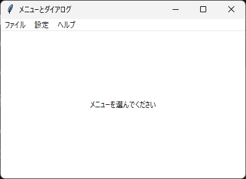
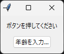

7. メニューとダイアログ
7.1 メニューバー
メニューバーは tk.Menu で作成します。ttk には Menu がないため、tk のものを使います。メニューバーを作る手順は次のとおりです。
tk.Menu(root)でメニューバーを作成し、root.configure(menu=メニューバー)でウィンドウに設定します。tk.Menu(メニューバー)で「ファイル」などのメニューを作成し、add_cascadeでメニューバーに追加します。各メニューに
add_commandなどで項目を追加します。
メニューに項目を追加する主なメソッドを次に示します。
メソッド |
説明 |
|---|---|
|
選ぶと |
|
|
|
項目を区切る線を追加します。 |
|
オンとオフを切り替える項目を追加します。 |
|
複数の項目から 1 つを選ぶ項目を追加します。 |
項目の label には表示する文字列を、accelerator にはショートカットキーの表記（"Ctrl+S" など）を指定します。accelerator は表示するだけなので、キーを押したときに処理を実行するには、別に bind が必要です。
Tk のメニューには、既定で先頭に点線の項目があり、これを選ぶとメニューを独立したウィンドウとして切り離せます。この機能は現在のアプリケーションではほとんど使われないため、root.option_add("*tearOff", False) で無効にするのが一般的です。この設定は、メニューを作成する前に行います。
7.3 messagebox
tkinter.messagebox モジュールには、メッセージを表示したり、ユーザーに確認を求めたりするダイアログが用意されています。どの関数も、最初の引数にタイトル、2 番目の引数にメッセージを指定します。
関数 |
用途 |
戻り値 |
|---|---|---|
|
情報の表示 |
|
|
警告の表示 |
|
|
エラーの表示 |
|
|
「はい」「いいえ」の確認 |
|
|
「OK」「キャンセル」の確認 |
|
|
「はい」「いいえ」「キャンセル」の確認 |
|
|
「再試行」「キャンセル」の確認 |
|
7.4 filedialog
tkinter.filedialog モジュールには、ファイルやフォルダーを選ぶダイアログが用意されています。
関数 |
用途 |
戻り値 |
|---|---|---|
|
開くファイルを 1 つ選ぶ |
パスの文字列 |
|
開くファイルを複数選ぶ |
パスの文字列のタプル |
|
保存先のファイル名を指定する |
パスの文字列 |
|
フォルダーを選ぶ |
パスの文字列 |
キャンセルされた場合は、空文字列などの空の値が返ります（askopenfilenames も、Windows では空のタプルではなく空文字列を返します）。そのため、if not path: のように、値が空かどうかで判定してください。主な引数を次に示します。
引数 |
説明 |
|---|---|
|
ダイアログのタイトルです。 |
|
選択できるファイルの種類です。 |
|
最初に表示するフォルダーです。 |
|
|
|
ダイアログの親ウィンドウです。 |
7.5 simpledialog と colorchooser
tkinter.simpledialog モジュールの askstring、askinteger、askfloat 関数は、1 つの値を入力するダイアログを表示し、入力された値を返します。キャンセルされた場合は None を返します。
tkinter.colorchooser モジュールの askcolor 関数は、色を選ぶダイアログを表示します。戻り値は ((赤, 緑, 青), "#rrggbb") の形式のタプルで、キャンセルされた場合は (None, None) です。
ここまでに説明したメニューとダイアログを使ったサンプルコードを次に示します。
1"""第 7 章: メニューと標準ダイアログのサンプルです。
2
3メニューバー、右クリックメニュー、messagebox, filedialog, simpledialog,
4colorchooser を使います。
5"""
6
7from __future__ import annotations
8
9import tkinter as tk
10from tkinter import colorchooser, filedialog, messagebox, simpledialog
11
12
13def main() -> None:
14 """メニューとダイアログを試すウィンドウを表示します。"""
15 root = tk.Tk()
16 root.title("メニューとダイアログ")
17 root.geometry("400x240")
18
19 # メニューの点線 (切り離し機能) を無効にします。メニューを作る前に設定します。
20 root.option_add("*tearOff", False)
21
22 # 背景色を変更するため、tk の Label を使います
23 label = tk.Label(root, text="メニューを選んでください", bg="white")
24 label.pack(fill="both", expand=True)
25
26 def open_file() -> None:
27 """ファイル選択ダイアログを表示し、選ばれたパスを表示します。"""
28 path = filedialog.askopenfilename(
29 title="ファイルを開く",
30 filetypes=[
31 ("テキストファイル", "*.txt"),
32 ("すべてのファイル", "*.*"),
33 ],
34 )
35 if path: # キャンセルされた場合は空文字列が返ります
36 label.configure(text=f"選択: {path}")
37
38 def change_name() -> None:
39 """文字列を入力するダイアログを表示します。"""
40 name = simpledialog.askstring(
41 "名前の入力", "名前を入力してください", parent=root
42 )
43 if name is not None: # キャンセルされた場合は None が返ります
44 label.configure(text=f"こんにちは、{name} さん")
45
46 def change_color() -> None:
47 """色選択ダイアログを表示し、ラベルの背景色を変更します。"""
48 _rgb, color = colorchooser.askcolor(title="背景色の選択", parent=root)
49 if color is not None:
50 label.configure(bg=color)
51
52 def show_about() -> None:
53 """情報メッセージを表示します。"""
54 messagebox.showinfo(
55 "バージョン情報", "メニューとダイアログのサンプル 1.0"
56 )
57
58 def quit_app() -> None:
59 """確認ダイアログで「はい」が選ばれたら終了します。"""
60 if messagebox.askyesno("終了の確認", "終了しますか？"):
61 root.destroy()
62
63 # メニューバーを作り、ウィンドウに設定します
64 menubar = tk.Menu(root)
65 root.configure(menu=menubar)
66
67 file_menu = tk.Menu(menubar)
68 menubar.add_cascade(label="ファイル", menu=file_menu)
69 file_menu.add_command(label="開く...", command=open_file)
70 file_menu.add_separator()
71 file_menu.add_command(label="終了", command=quit_app)
72
73 settings_menu = tk.Menu(menubar)
74 menubar.add_cascade(label="設定", menu=settings_menu)
75 settings_menu.add_command(label="名前の入力...", command=change_name)
76 settings_menu.add_command(label="背景色...", command=change_color)
77
78 help_menu = tk.Menu(menubar)
79 menubar.add_cascade(label="ヘルプ", menu=help_menu)
80 help_menu.add_command(label="バージョン情報", command=show_about)
81
82 # 右クリックで表示するメニュー (コンテキストメニュー) です
83 context_menu = tk.Menu(root)
84 context_menu.add_command(label="背景色...", command=change_color)
85 context_menu.add_command(label="バージョン情報", command=show_about)
86
87 def show_context_menu(event: tk.Event[tk.Misc]) -> None:
88 """マウスポインターの位置にコンテキストメニューを表示します。"""
89 context_menu.tk_popup(event.x_root, event.y_root)
90
91 # Windows と Linux の右クリックは <Button-3> です (macOS では <Button-2>)
92 label.bind("<Button-3>", show_context_menu)
93
94 # ウィンドウの閉じるボタン (x) が押されたときも確認します
95 root.protocol("WM_DELETE_WINDOW", quit_app)
96
97 root.mainloop()
98
99
100if __name__ == "__main__":
101 main()

実行結果
root.protocol("WM_DELETE_WINDOW", quit_app) は、タイトルバーの閉じるボタンが押されたときに呼び出す関数を設定します。これにより、閉じるボタンでもメニューの「終了」と同じ確認ダイアログが表示されます。
7.6 Toplevel による独自ダイアログ
標準のダイアログにない入力画面が必要な場合は、tk.Toplevel で新しいウィンドウを作成し、独自のダイアログを作ります。ダイアログを閉じるまで元のウィンドウを操作できないようにしたダイアログを、モーダルダイアログと呼びます。モーダルダイアログは、次のメソッドを組み合わせて作ります。
メソッド |
説明 |
|---|---|
|
ダイアログを親ウィンドウに従属させます。ダイアログは親ウィンドウの手前に表示され、タスクバーには表示されなくなります。 |
|
アプリケーションのマウスとキーボードの操作を、このウィンドウだけが受け付けるようにします。 |
|
ウィンドウが破棄されるまで待ちます。待っている間もイベントは処理されます。 |
1"""第 7 章: Toplevel で独自のダイアログを作るサンプルです。
2
3モーダルダイアログ (閉じるまで元のウィンドウを操作できないダイアログ) を作り、
4入力された値を呼び出し元に返します。
5"""
6
7import tkinter as tk
8from tkinter import ttk
9
10
11def ask_age(parent: tk.Misc) -> int | None:
12 """年齢を入力するモーダルダイアログを表示します。
13
14 OK が押された場合は入力された年齢を、キャンセルされた場合は None を返します。
15 """
16 dialog = tk.Toplevel(parent)
17 dialog.title("年齢の入力")
18 dialog.resizable(False, False)
19 dialog.transient(parent.winfo_toplevel()) # 親ウィンドウの手前に表示します
20
21 age = tk.IntVar(value=20)
22 result: int | None = None
23
24 frame = ttk.Frame(dialog, padding=10)
25 frame.pack()
26 ttk.Label(frame, text="年齢").grid(row=0, column=0, padx=(0, 10))
27 spinbox = ttk.Spinbox(frame, from_=0, to=120, textvariable=age, width=5)
28 spinbox.grid(row=0, column=1)
29
30 def on_ok() -> None:
31 """入力値を結果に設定してダイアログを閉じます。"""
32 nonlocal result
33 try:
34 value = age.get()
35 except tk.TclError: # 数値以外が入力された場合
36 value = -1 # 範囲外の値として扱います
37 if not 0 <= value <= 120:
38 spinbox.focus_set()
39 return
40 result = value
41 dialog.destroy()
42
43 buttons = ttk.Frame(frame)
44 buttons.grid(row=1, column=0, columnspan=2, pady=(10, 0))
45 ttk.Button(buttons, text="OK", command=on_ok).pack(side="left", padx=2)
46 ttk.Button(buttons, text="キャンセル", command=dialog.destroy).pack(
47 side="left", padx=2
48 )
49
50 spinbox.focus_set()
51 dialog.wait_visibility() # grab_set は表示後でないと失敗することがあります
52 dialog.grab_set() # 他のウィンドウへの操作を受け付けないようにします
53 dialog.wait_window() # ダイアログが閉じられるまで待ちます
54 return result
55
56
57def main() -> None:
58 """ダイアログを呼び出すボタンを持つウィンドウを表示します。"""
59 root = tk.Tk()
60 root.title("独自ダイアログ")
61
62 message = tk.StringVar(value="ボタンを押してください")
63 ttk.Label(root, textvariable=message, padding=10).pack()
64
65 def on_click() -> None:
66 """ダイアログを表示し、結果をラベルに反映します。"""
67 age = ask_age(root)
68 if age is None:
69 message.set("キャンセルされました")
70 else:
71 message.set(f"{age} 歳が入力されました")
72
73 ttk.Button(root, text="年齢を入力...", command=on_click).pack(pady=(0, 10))
74
75 root.mainloop()
76
77
78if __name__ == "__main__":
79 main()

実行結果（メインウィンドウ）
ask_age 関数は、wait_window でダイアログが閉じられるまで待ってから、入力された値を返します。そのため、呼び出し側は標準のダイアログと同じように、戻り値を受け取るだけで結果を利用できます。